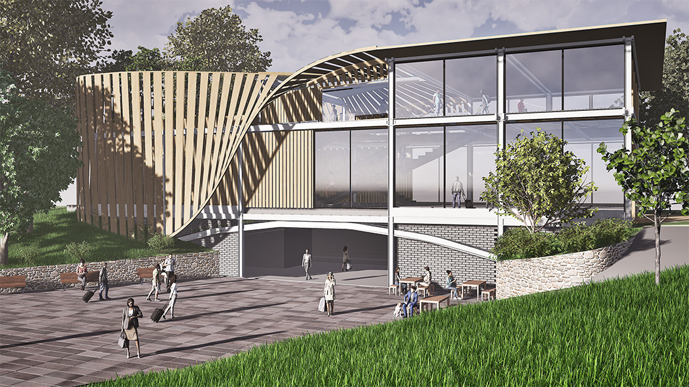

SELECTED WORKS
Academic Projects from 2025–2026



ABOUT ME
I am a community-focused professional transitioning to architecture, driven by a commitment to contributing to equity-driven, sustainable, and innovative environments.
Leveraging a background in community development and recent certification in Digital Design & Visualization, I apply self-directed technical upskilling to solve complex design problems and streamline production across professional and academic settings. My goal is to combine rigorous industry experience with my passion for the built environment.
Technical Skills
- BIM & 3D Modeling Revit, Rhino 3D, SketchUp Pro, Blender
- Computational Design Grasshopper, Dynamo
- Visualization Enscape, Twinmotion
- Graphics Photoshop, Illustrator, InDesign
- Data & Dev Salesforce Admin, Flow Automation
Education
Minor in Green Building and Design
CONNECT
Currently seeking opportunities to gain rigorous industry experience.
Needham, MA 02492
(802) 345-0670